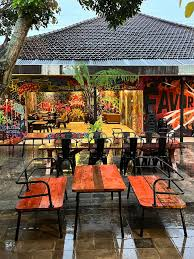

📍Menu
Dari sisi pelayanan, Ijes Backyard menawarkan beragam pilihan hidangan dan minuman yang cocok untuk dinikmati pada malam hari. Menu yang tersedia umumnya mencakup makanan ringan, hidangan utama, serta berbagai varian minuman yang disajikan dengan tampilan menarik. Tempat ini juga sering menghadirkan hiburan berupa musik dan aktivitas kreatif, sehingga menciptakan atmosfer yang hidup dan interaktif. Hal tersebut menjadikannya salah satu destinasi favorit bagi mereka yang ingin melepas penat setelah beraktivitas seharian.

